Những bãi biển cát trắng lấp lánh của Phú Quốc đã khiến nó có biệt danh là "Đảo Ngọc", nhưng những nỗ lực bảo tồn môi trường và di sản văn hóa của hòn đảo này đáng được quan tâm không kém gì những làn sóng và cát đẹp như tranh vẽ của nó. Đánh bắt cá và nông nghiệp vẫn là các ngành công nghiệp chính, và hơn một nửa hòn đảo yên bình đã được bảo vệ bởi Khu dự trữ sinh quyển thế giới của UNESCO từ năm 2006. Là quê hương của nước mắm, hạt tiêu và ngọc trai, Phú Quốc mang đến cả cuộc sống xa xỉ và địa phương, với nguồn nước sạch của ban ngày và bầu trời quang đãng vào ban đêm.
Đường bờ biển dài 150 km của Phú Quốc, với những con sóng nhẹ nhàng và làn nước trong suốt màu ngọc lam, là điểm đến nổi tiếng nhất của các môn thể thao dưới nước tại Việt Nam. Nếu bạn thích nằm dài, hãy đến Bãi biển dài, trải dài 20 km với cảnh hoàng hôn không bị cản trở. Xa hơn về phía bắc, những con đường đất và những khu nghỉ dưỡng hẻo lánh khiến những bãi biển rợp bóng cây như Gành Dầu và Bãi Thơm ẩn mình khỏi đám đông. Những du khách ưa mạo hiểm có thể đi bộ qua dãy núi kéo dài theo chiều dài của hòn đảo, nhưng thậm chí những chuyến đi bộ ngắn qua khu rừng thường xanh cũng thưởng cho những nhà thám hiểm với thác nước, hồ đá và hang động.
Phú Quốc nổi tiếng với nước mắm, và rất đáng để tham quan một nhà máy sản xuất nước mắm để xem cách làm ra kho báu lên men này. Để có một cái nhìn thoáng qua về cuộc sống hàng ngày, hãy ghé thăm một làng chài truyền thống như Hàm Hinh để ăn hải sản tươi sống tại một nhà hàng nổi (hãy thử với tiêu đen trồng tại địa phương, một món ngon khác!). Những du khách quan tâm đến văn hóa và lịch sử địa phương sẽ thích thú với các địa điểm giáo dục như nhà tù Cây Dừa và các đền thờ như Cao Đài, nơi các tín đồ theo một tôn giáo độc đáo tổng hợp các yếu tố của Thiên chúa giáo, Phật giáo, Hồi giáo, Khổng giáo, Ấn Độ giáo, Thần thánh và Đạo giáo.
Phú Quốc quanh năm ấm áp và dễ chịu với nhiệt độ trung bình dao động khoảng 27 ° C. Thời tiết mát mẻ nhất vào mùa khô giữa tháng 10 và tháng 3, và nóng nhất vào tháng 4 và tháng 5, khi mưa bắt đầu ngớt. Vào tháng Bảy, mùa mưa đang bắt đầu, kéo theo nhiệt độ mát mẻ hơn cho đến tháng Mười.
Bãi biển Ông Lang Phú Quốc: Là một cảnh đẹp Phú Quốc nằm cách trung tâm thị trấn Dương Đông chừng 7km, bãi biển Ông Lang hấp dẫn du khách bởi vẻ thơ mộng và yên bình hiếm có. Các hoạt động thú vị không nên bỏ lỡ ở đây là tắm biển, phơi nắng, mở tiệc nướng, hải sản, sống ảo, câu cá, lặn ngắm san hô, chèo thuyền kayak và đặc biệt là ngắm hoàng hôn cực phẩm.
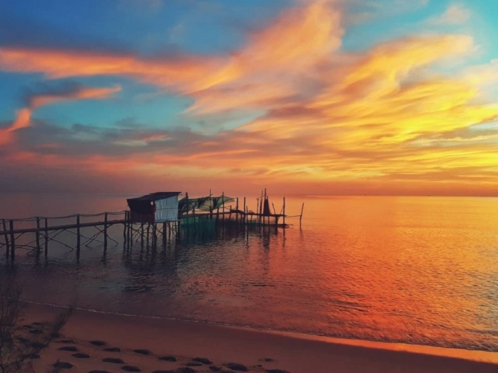Sông Cửa Cạn: Bắt nguồn từ dãy núi Hàm Ninh, chảy theo hướng Tây Tây Nam rồi đổ ra Vịnh Thái Lan, sông Cửa Cạn là một địa điểm không thể không nhắc đến trên bản đồ các điểm du lịch Phú Quốc. Tại đây, du khách sẽ có cơ hội chiêm ngưỡng dòng sông đẹp tự nhiên và trải nghiệm chèo thuyền xuôi theo dòng nước, ngắm khu rừng nguyên sinh ven bờ.
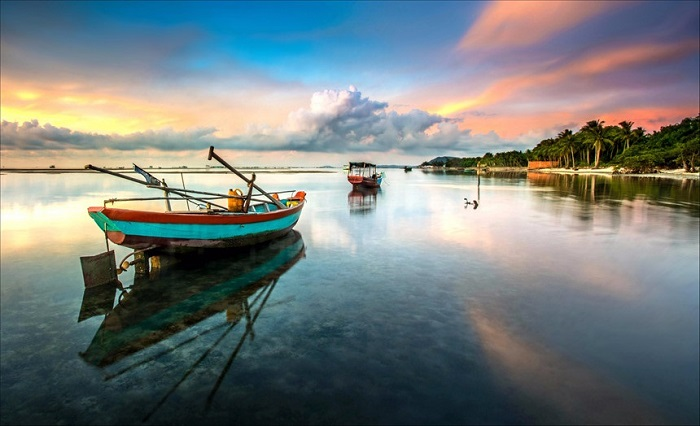Làng Chài Rạch Vẹm Phú Quốc: Cảnh đẹp Phú Quốc làng chài Rạch Vẹm nằm ở phía bắc đảo ngọc, cách thị trấn Dương Đông khoảng 20km. Tại đây có khá ít hộ dân sinh sống và bãi biển còn hoang sơ nên phù hợp với những du khách đang muốn tận hưởng cảm giác yên bình, dễ chịu.
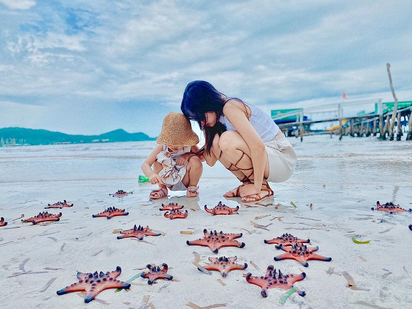Bãi Khem Phú Quốc - JW Marriott Phu Quoc Emerald Bay: Bãi Khem - bãi biển đẹp Phú Quốc, nằm ở phía nam đảo ngọc, thuộc địa phận thị trấn An Thới, cách thị trấn Dương Đông chừng 25km. Các hoạt động đáng để trải nghiệm ở đây như tắm biển, tắm nắng trên bờ biển dài, chụp ảnh check in, ngắm bình minh tuyệt đẹp, chèo thuyền kayak, lướt ván Sup.
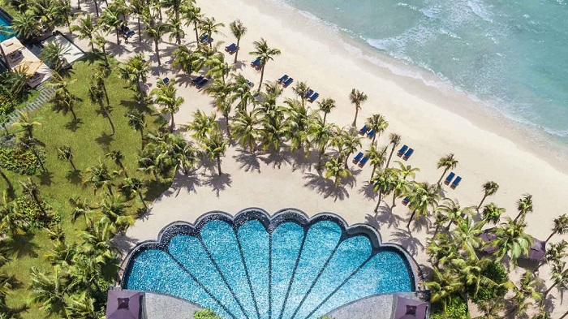Chùa Hộ Quốc Phú Quốc (hay còn gọi là Thiền Viện Trúc Lâm Phú Quốc): Cảnh đẹp Phú Quốc Thiền Viện Trúc Lâm ở thôn Sôi Lớn cách trung tâm thị trấn Dương Đông khoảng chừng 18km. Đây không chỉ là nơi tìm hiểu về văn hóa Phật giáo mà còn là địa điểm ngắm bình minh tuyệt vời ở Phú Quốc.
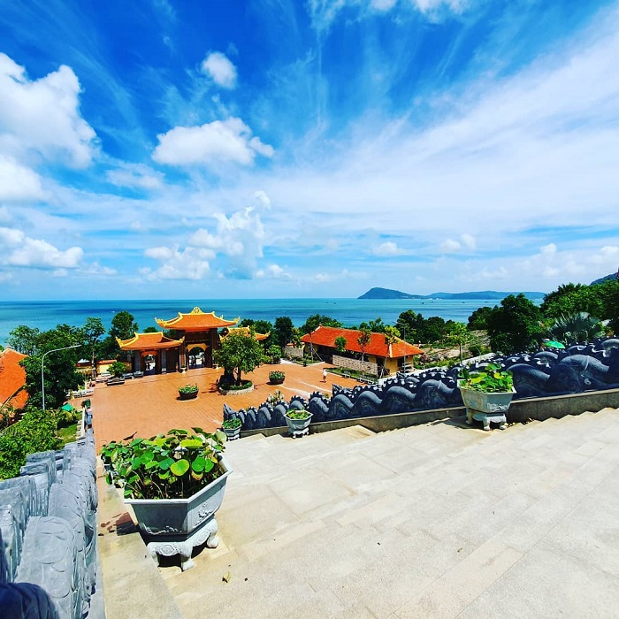Suối Tranh: Địa điểm du lịch Phú Quốc - Suối Tranh nằm cách thị trấn Dương Đông chừng 9km về phía Nam. Với những du khách yêu thích khung cảnh thiên nhiên hữu tình đẹp tựa như tranh vẽ thì đây sẽ là địa điểm lý tưởng nhất.
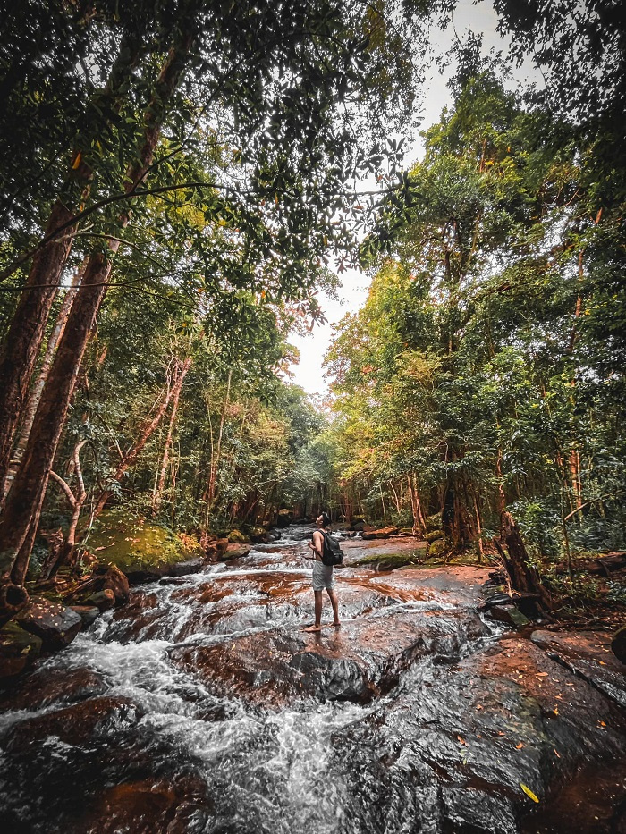Suối Đá Bàn: Nằm cách thị trấn Dương Đông khoảng 10km về phía Đông Bắc, suối Đá Bàn thuộc xã Cửa Sương là một cảnh đẹp Phú Quốc khiến du khách mê tít bởi bầu không khí trong lành yên bình, cảm giác thư thái khi lắng nghe âm thanh trong trẻo của thiên nhiên và ngâm mình dưới làn nước suối mát lạnh.
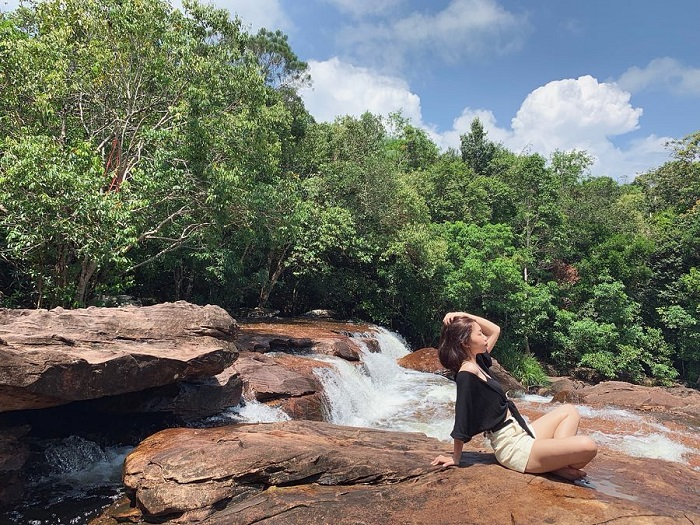Làng chài Hàm Ninh: Tọa lạc dưới chân núi Hàm Ninh, xã Hàm Ninh, làng chài Hàm Ninh là làng chài cổ kính nhất huyện đảo Phú Quốc. Tại đây, du khách sẽ được tham quan và trải nghiệm ở nhiều ngành nghề truyền thống của ngư dân vùng biển trên đảo.
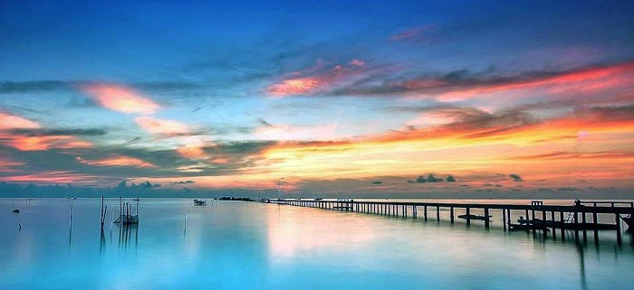Hồ Dương Đông: Hồ Dương Đông là hồ chứa nước lớn nhất, cung cấp nước cho cả hòn đảo Phú Quốc. Không chỉ có vậy đây còn là một địa điểm du lịch vô cùng hấp dẫn. Tại đây, bạn sẽ không phải lo lắng đi đâu ăn gì ở Phú Quốc nữa, mà chỉ cần tận hưởng khung cảnh rộng lớn, câu cá và thưởng thức các món nướng ngay trên những tảng đá bằng phẳng nhô ra mặt nước.
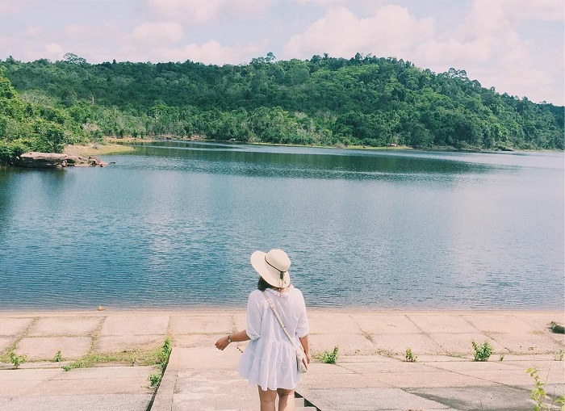Bãi Vũng Bầu: Cách thị trấn Dương Đông khoảng 20km, bãi Vũng Bầu sở hữu bãi cát vàng hình lưỡi liềm tuyệt đẹp. Ở cảnh đẹp Phú Quốc này, du khách sẽ có cơ hội trải nghiệm nhiều hoạt động thú vị như ngắm nhìn tầng thực vật hoang sơ, những hàng dừa, cây cọ mọc rải rác khắp nơi, thích thú khi bắt gặp sao biển, ốc xà cừ hay một vài loài nhím biển trên cát. Câu cá, lặn ngắm san hô hay câu mực đêm cũng là những hoạt động nên trải nghiệm một lần.
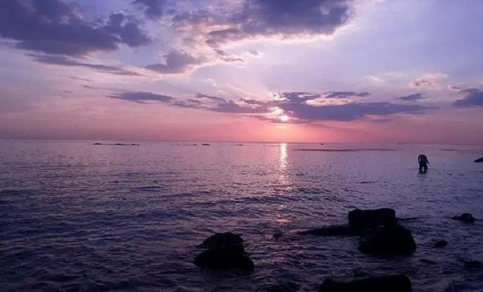Bãi Trường: Nếu bạn vẫn còn băn khoăn rằng nên đi đâu ở Phú Quốc thì hãy đến ngay bãi Trường nhé. Đây là bãi biển có diện tích lớn nhất và cũng là bãi biển dài nhất ở Phú Quốc. Nơi đây cũng khá nhộn nhịp và đầy đủ tiện ích do xung quanh đã có nhiều khu nghỉ dưỡng và khách sạn tuyệt đẹp.
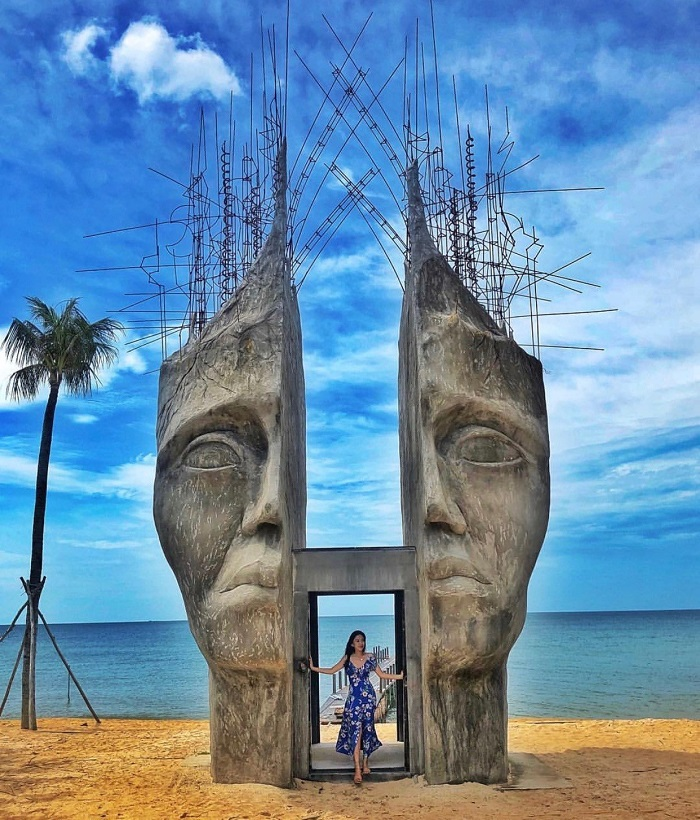Bãi Dài: Từ thị trấn Dương Đông, bạn chỉ cần chạy xe khoảng 45 phút về phía resort Chen Sea, Tây Bắc Đảo là sẽ đến được đây. Bãi Dài là một trong 10 bãi biển đẹp và hoang sơ nhất thế giới do đài truyền hình BBC vinh danh.
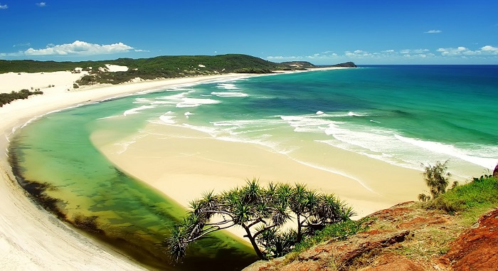Bãi tắm Dinh Cậu: Cảnh đẹp biển Phú Quốc ở bãi Dinh Cậu luôn có sức hấp dẫn đặc biệt bởi cảnh quan thiên nhiên tuyệt vời. Cách thị trấn Dương Đông khoảng 200m về phía Tây, bãi Dinh Cậu hấp dẫn du khách không chỉ bởi vẻ đẹp thiên nhiên kỳ thú mà còn vì sự linh thiêng, huyền bí từ những câu truyện truyền thuyết xa xưa.
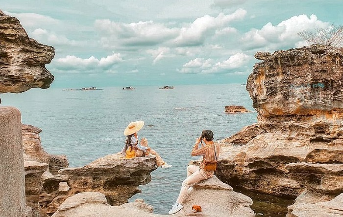